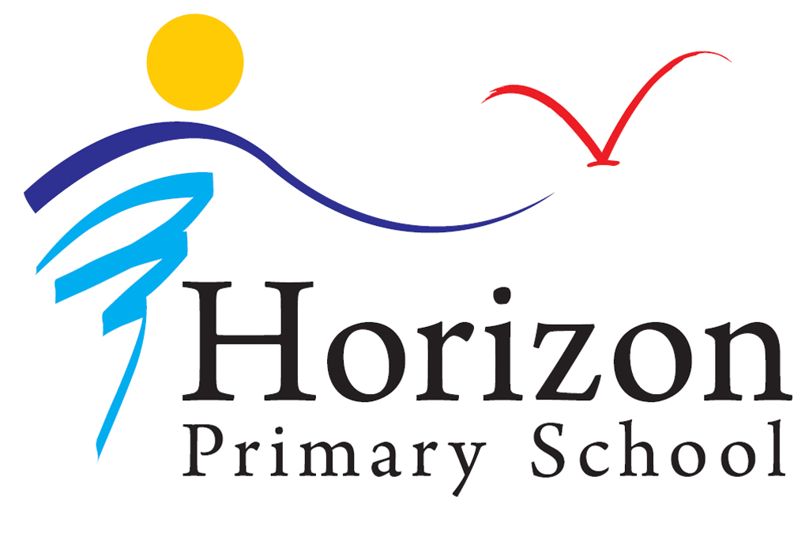

The Primary.
I went to Horizon Primary School and finished the PSLE in 2016. This was my worst phase!
I don't remember alot from this part.

I went to Horizon Primary School and finished the PSLE in 2016. This was my worst phase!
I don't remember alot from this part.
I went to Punggol Secondary School, where I took the GCE N(A)-Level examination and GCE O-Level English Examination.
I was very fortunate to get into the course that I wanted after picking all the subjects I wanted to study for the GCE N(A)-Levels.
This phase of my life was pretty mid.
I'm currently studying at Nanyang Polytechnic's Game Development & Technology course since 2022, and I graduated from the Polytechnic Foundation Program in 2021.
Unfortnately, this rune has yet to be discovered, check back in 2025.